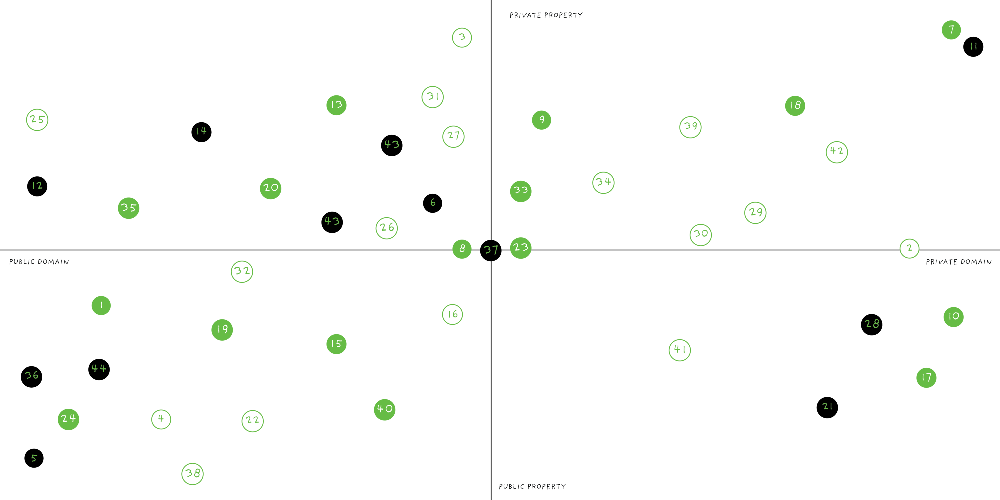
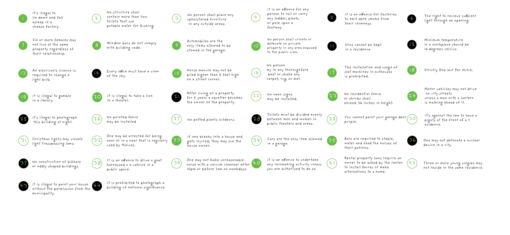
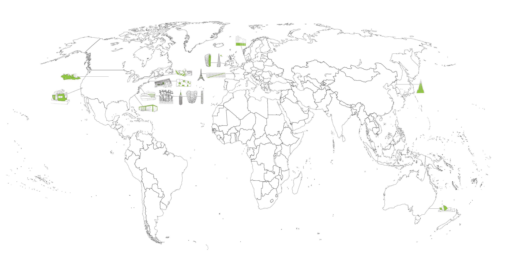

2021
TORT
The Building Game without Building (there’s too much of that anyway)
Are you tired of hating the buildings around you? Do you just want to tear them all down? Yes?
In that case, this game is the one for you! Tort is the building game without building. The game where buildings don’t happen because of your legal prowess! Play tort with your friends, family, and even enemies.
Tort. The building game without building. Available soon on the shelves of your local Target. Or, if you live in Cambridge, a Target very far away.
CONTEXT
4.205: Cultivating Critical Practice, Massachusetts Institute of Technology
SOFTWARE + TOOLS
Procreate, Illustrator, laser cutting
COLLABORATOR
Soala Ajienka
SUPERVISOR
Ana Miljački
TORT is a card game about agency; the users, the architecture or the architect? The conversation is rearticulated in a way that way that situates the locus of agency in a frame of interactions between the end users of the buildings and in turn the inhabitants of the built environment. It brings two aspects of world building together, ridiculous but still active laws from a diverse range of places, and design briefs inspired by existing projects that can possibly be situated in a range of contexts.
By deciding from a fixed set of varying laws, players choose and make a case for which is most applicable to not get a building built. They leave after a series of humorous yet educational game plays with the understanding of a perhaps obscure set of entanglements that they will not have been concerned with otherwise, if they had not been positioned to justify the application of the laws in their arsenal against building projects.
This game emerged from ideas discussed by Michael De Certeau, discussing agency within design of the built environment and the ways users do not simply use systems created for them but assimilate them into their own cultural patterns. However this game inverts this narrative, proposing: what if communities were given the opportunities to fully reject new urban proposals before they are ever implemented.
As players engage with the game, the questions that should permeate are:
- Who are the 'unseen' actors that will be affected by this building project and how does architecture intentionally or unintentionally affect them?
- How are existing policies and laws accounted for in building projects?
- How can the public renounce new building proposals and take agency over their urban environments?
- How can vested interests in the built environment diverge?




gameplay
here: